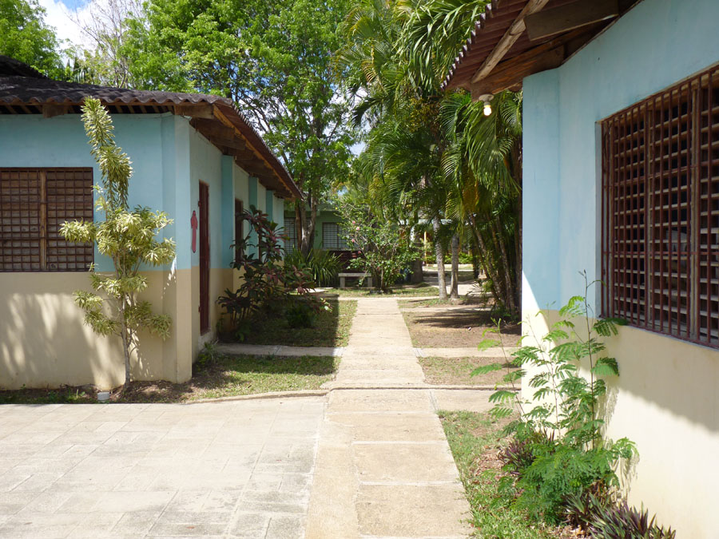
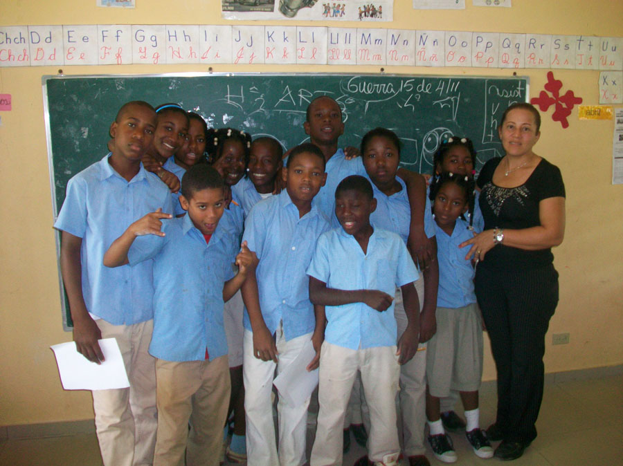

Gallery
Life at Futuro Vivo
See the vibrant community and smiling faces your donations support every day.

For over 30 years, Futuro Vivo School has been a beacon of hope for children in Guerra, Dominican Republic — giving those with the least the opportunity to build something more.
Futuro Vivo School is located in Guerra, a neighborhood on the eastern outskirts of Santo Domingo in the Dominican Republic. It is a community shaped by poverty, where access to quality education and healthcare is far from guaranteed — but where the potential of its children has never been in doubt.
The school was founded over 30 years ago by two Sisters from Spain who saw a profound need and answered it with extraordinary dedication. What began as a small effort to reach the most vulnerable children in the neighborhood has grown into an institution that now serves 790 students across multiple grades.
Today, Futuro Vivo School stands as one of the most vital educational institutions in the region — fully free of charge, fully committed, and fully funded by the generosity of donors like you.


The children at Futuro Vivo come from families living in some of the most challenging conditions in Guerra. For many, the school is the single most stabilizing force in their lives — providing not just education, but meals, healthcare, and the safety of a nurturing environment every day.
Students range from the earliest grades through secondary school, giving families a continuous, trusted place for their children to grow up. Without the school, most of these children would face a future with very little formal education and even fewer opportunities.
Every dollar donated to Support Futuro Vivo becomes a direct investment in these 790 lives — in their education, their health, and their futures.
See Our ImpactSee the vibrant community and smiling faces your donations support every day.
Your donation funds the education, health, and meals of real children with real futures. Every dollar goes directly to the school.